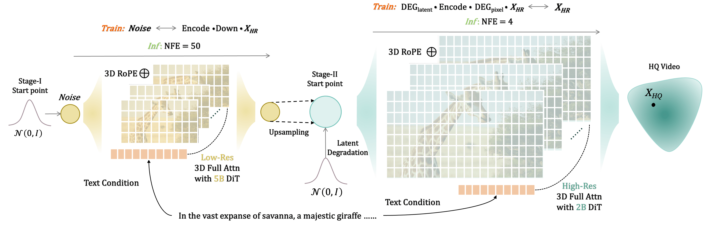

Flowing Fidelity to Detail for Efficient High-Resolution Video Generation

This work presents FlashVideo, a practical tool with which users can easily personalize their own photos on the fly by providing one or a few reference face images and a text prompt. Our approach is distinguishable from DiT diffusion models have achieved great success in text-to-video generation, leveraging their scalability in model capacity and data scale. High content and motion fidelity aligned with text prompts, however, often require large model parameters and a substantial number of function evaluations (NFEs). Realistic and visually appealing details are typically reflected in high-resolution outputs, further amplifying computational demands—especially for single-stage DiT models. To address these challenges, we propose a novel two-stage framework, FlashVideo, which strategically allocates model capacity and NFEs across stages to balance generation fidelity and quality. In the first stage, fidelity is prioritized through a low-resolution process utilizing large parameters and sufficient NFEs to enhance computational efficiency. The second stage establishes flow matching between low and high resolutions, effectively generating fine details with minimal NFEs. Quantitative and visual results demonstrate that FlashVideo achieves state-of-the-art high-resolution video generation with superior computational efficiency.
Brief Summary of Text Prompt:
Fluffy llama with round glasses in a cozy cafe with warm lighting, working on laptop, amidst large-eyed expressions.
Brief Summary of Text Prompt:
Giant woolly mammoths roam a snowy meadow with snow-covered trees and mountains, bathed in warm mid-afternoon light, captured at a low angle.
Brief Summary of Text Prompt:
Drone captures historic church, people, and tiered pathways on Amalfi Coast with intricate architecture, hilly landscapes and stunning ocean vistas under afternoon glow.
Brief Summary of Text Prompt:
Stylish woman in chic attire casually walks on vibrant, neon-lit Tokyo street, its glistening dampness reflects city's colorful lights and pedestrians.
Brief Summary of Text Prompt:
A sleek cat with bright eyes peers curiously from a cozy spot, attentively scanning surroundings, captured in warm lighting from a side angle, highlighting its inquisitive expression
Brief Summary of Text Prompt:
An extreme close-up captures a thoughtful, well-dressed elder man's subtle revelation at a Parisian café, with warm cinematic lighting and softly blurred Paris streets enhancing the scene's depth.
Brief Summary of Text Prompt:
A quaint village in a serene valley with cherry blossoms, villagers in traditional attire engage in daily activities, captured dynamically.
Brief Summary of Text Prompt:
A vibrant tabby cat dashes through a lush garden, its gleaming eyes alight with excitement. Captured from a ground-level angle under warm cinematic tones.
Brief Summary of Text Prompt:
A striking figure rides a massive tortoise through a sunlit desert of glass sand, captured in a wide-to-close shot emphasizing their determination and the landscape's glistening beauty.
Brief Summary of Text Prompt:
Young woman in teal dress walks gracefully in green forest with vibrant foliage, sunlight filtering through leaves, among blooming wildflowers.
Brief Summary of Text Prompt:
Vincent van Gogh, with red hair and intense gaze, in a sunlit, paint-splattered room, amidst canvases, vibrant paints, and a sunflower canvas.
Brief Summary of Text Prompt:
Man in Santa hat and red scarf smiles, conversing with tiger before laptop, against richly-textured brick fireplace backdrop, camera smoothly glides.
Brief Summary of Text Prompt:
Majestic giraffe in vast Savannah, reaching for lush acacia leaves, captured with camera panning over golden grass and sand-colored coat.
Brief Summary of Text Prompt:
Low-angle view of a confident lion with golden mane on a rocky outcrop, under warm sky glow, captured with a subtle camera pan.
Brief Summary of Text Prompt:
Beautiful princess in flowing gown on majestic horse by a gently flowing river, camera captures her serene expression and poised demeanor.
Brief Summary of Text Prompt:
Charming, chubby red panda with soft fur, sniffing and nibbling pizza with dexterous paws on a wooden platform amidst lush foliage.
Brief Summary of Text Prompt:
A bejeweled crab elegantly strolls along the beach, dropping gems and jewels intermittently, its trail captured against the contrasting, sandy backdrop.
Brief Summary of Text Prompt:
A sparkling waterfall cascades into a clear pool within a vibrant, tranquil forest clearing, enhanced by colorful flora and small birds, captured in a gentle camera sweep.
Brief Summary of Text Prompt:
An adorable kitten in a pirate costume confidently rides a robot vacuum around the house, its curious expression and mischievous antics warmly illuminated.
Brief Summary of Text Prompt:
A serene lakeside cabin and classic wooden rowboat sit peacefully amongst greenery, with the camera capturing their gentle interaction with the tranquil water.
Brief Summary of Text Prompt:
A relaxed cow, wearing sunglasses and a hat, lounges beneath a palm tree on a beach.
Brief Summary of Text Prompt:
A delightfully armored hedgehog rides a toy horse in a medieval castle.
Brief Summary of Text Prompt:
A camera glide reveals an ancient, intricately-carved fountain nestled in a vibrant garden, its soft cascades whispering secrets amidst sunlight-dappled flora.
Brief Summary of Text Prompt:
A first-person journey through frost-lined Manhattan streets elegantly reveals a frost-encased Empire State Building, embodying the haunting, wintry beauty of the city.
Brief Summary of Text Prompt:
A fluffy llama engagingly reads a picture book in a cozy nook surrounded by pillows and soft lighting.
Brief Summary of Text Prompt:
A sweeping aerial shot of a steam train traversing Scotland's Glenfinnan Viaduct, surrounded by lush landscapes and rugged mountains, with tracking camera enhances its majestic beauty.
Brief Summary of Text Prompt:
An intellectual-looking rabbit, with glasses and a newspaper, sits on a quaint chair, highlighting its engrossed, attentive reading posture.
@article{zhang2025flashvideo,
title={FlashVideo:Flowing Fidelity to Detail for Efficient High-Resolution Video Generation},
author={Zhang, Shilong and Li, Wenbo and Chen, Shoufa and Ge, Chongjian and Sun, Peize and Zhang, Yida and Jiang, Yi and Yuan, Zehuan and Binyue, Peng and Luo, Ping},
journal={arXiv preprint arXiv:2502.05179},
year={2025}
}
Acknowledgements: We thank DreamBooth for providing the page templates.